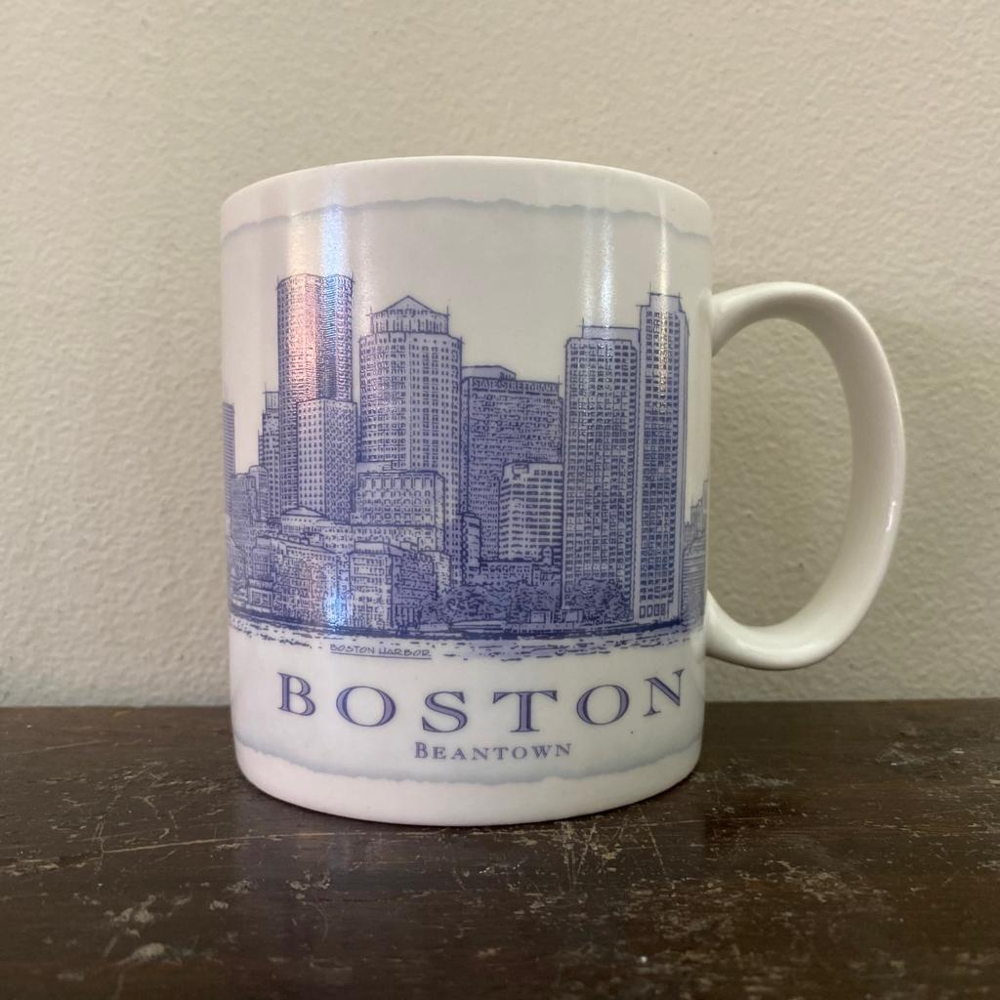

-

- Boston Mug Archive
- A tall white mug with a blue ink sketch of Boston Harbor on one side. The other side has a chart that includes a metropolitan profile of Boston. It includes Boston's incorporation date, elevation level, land area, average annual rainfall, and average daily temperature. The handle has "Starbucks" printed across it.
Narrative
The Architecture Series included a total of 63 mugs, with locations from both Canada and the United States. Some of these mugs were more specific places than others, such as the Pike Place mug, which displayed a drawing of the first Starbucks storefront. Others were broader with their locations, like the Canada or Colorado mugs, both with sketches of a rural landscape on them. This collection is unique for its size and design, the most notable features being the sketchy art style in blue and the profile included on each mug.
The Boston mug has a metropolitan profile on one side of the mug, listing the date it was created (1822), the elevation of the city (330 feet), the land area (48 square miles), the average annual rainfall (42.53 inches), and the average daily temperature (January: 28.6°F, July: 73.5°F). It also includes a short description of Boston underneath these numbers that reads: “Boston is located on the Massachusetts Bay in the eastern part of the state of Massachusetts.”
The other side of the mug features a sketch in blue ink of Boston Harbor, with the largest text reading Boston and smaller text underneath that says Beantown. The buildings on this mug are hard to recognize, with only one of them having a name on it, that building being State Street Bank. However, when comparing this mug to a photo of Boston Harbor today, there is little to no difference. While the city itself may not have changed much over the past few decades, the temperature information has changed, if only slightly.
The Architecture Series is very different from other series that Starbucks has created, as this series focuses on architecture rather than landmarks, as the title suggests. It is in a sketchier art style, where there is less emphasis on buildings, but the Boston skyline is still clear.